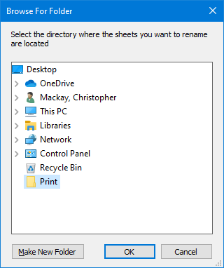

Sheet Renamer
Sheet Renamer

 Sheet Renamer allows you to rename all PDF files in a directory based on a Sheet Set.
Sheet Renamer allows you to rename all PDF files in a directory based on a Sheet Set.
Naming convention is Project Number-Sheet Number_Current Revision
Print: Follow the steps below to setup your print settings
- Select your PDF printer from the drop down list in the Printer group.
- Select Create separate files in the File group.
- Click Browse... and select the directory you want to print to. It's more convenient to create a temporary directory on your Desktop. This directory must contain ONLY the files that you wish to rename.
- Select Selected views/sheets in the Print Range group, then click Select... to select your Sheet Set.
- Print your sheets as usual
Files before renaming: Your PDF files should look like the ones pictured below
Rename your sheets: Follow the steps below to rename your sheets
- Select Browse to open Browse For Folder
- Select the directory where the sheets you want to rename are located. Click OK. 
- Select the Sheet Set you used to print your sheets. Click OK and then Yes to confirm. Your files will be renamed.